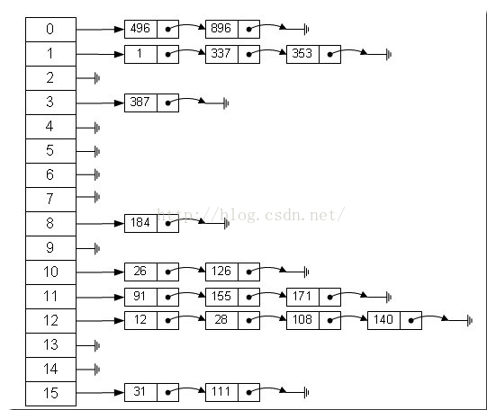

参考：https://www.cnblogs.com/chinajava/p/5808416.html
基本
综合数组与链表的优点。
哈希表的数组中每一个元素称为一个箱子(bin)，箱子中存放的是键值对。新插入的键值对放在下标为键的哈希值/箱子数目（数组长度）的箱子中。
哈希表的查询的时间复杂度是O(桶的数目)、插入、删除的时间复杂度都为O(1)。
插入时如果遇到冲突，有两种方式解决冲突：
- 链接法

- 开放寻址法
最典型的就是线性寻址，即插入时从冲突的箱子出往后找，将键值对放到后面第一个空箱子。
- 二次探测法
若当前key与原来key产生相同的哈希地址，则当前key存在该地址后偏移量为（1,2,3...）的二次方地址处 key1：hash(key)+0 key2：hash(key)+1^2 key3：hash(key)+2^2
扩容（重哈希）
负载因子 = 总键值对数 / 箱子个数
负载因子大于0.75或者1就要对哈希表进行扩容（重哈希）